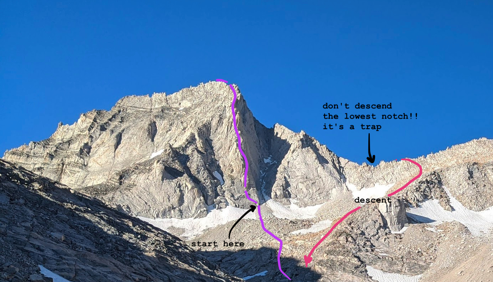

North Arete of Bear Creek Spire (13,726 ft) c2c
I was surprised when Marco’s idea for “what do you want to do this weekend” involved more than a 20 minute stroll, and even more so when he agreed to a 4am wakeup after I heard stories of friends epic-ing on this climb after getting off-route. We managed it car-to-car (c2c) in 14+ hours, 5:10 - 19:25. Great granite with improbably friendly climbing, neat ridge traversing, sweeping views, amazing weather, and a sloggy but safe descent made a good Sunday run in the mountains.
Gear: single rack to 2’, large nuts, a duck, many slings, 60m alpine rope.
Here is a map of our approach. It isn’t a gps track, I drew it with digital marker, so it’s useless trying to follow it to the pixel, but I thought it was pretty straightforward to determine irl. We followed Croft’s approach of leaving the main trail at Gem Lakes, which seemed easy enough, although I did see Peakbagger tracks that left earlier at Long Lake.

thanks for being a great map tool caltopo.
We left the house in Mammoth at 4:10, starting off the Mosquito Flat trailhead at the end of Rock Creek at 5:10 as the light came in and made my sleepy mind’s eye feel like I was walking in a claymation.
Though crampons & ice axe are usually necessary this time of year, last season was a blessed (or cursed, depending on your inclinations) mediocre snow year, so we were treated to a minimalistic alpine experience with less gear and shockingly nonexistance mosquitos (spoken as the person who is always first to be bitten). You can see the climb from close to the trailhead, so if in doubt take a look with your eyes (maybe the day before if you’re getting a pre-dawn start), or better yet, get a friend peakbagging in the area to snap a photo for you (thanks Yelly!)
After crossing the river downstream of Gem Lakes you would be led to believe by Croft’s approach map that you must bypass a “Restoration Area: Use Existing Trail” sign and proceed to stomp on sensitive wetland,
but if you walk a couple hundred feet further there’s now a luxurious and guilt-free developed trail that leads right and up to the biggest Gem Lake before dissolving into a talus slope.
As we ascended into the talus, we realised it is the friendly kind you can do a confident jog over.
We made our way up to Dade Lake as the morning brightened in earnest, although neither of us snapped a photo because we were concerned with refilling water, dropped our packs, and hiking on at top speed. The alpine lake was clear and quiet, its shores dotted with the bright tents of campers just waking up. Meanwhile, I was so hungry that I ate my lunch tamale, even though it was still 8am.
The last .3 miles were the worst, I am usually a decently paced hiker but I got hit in the face with altitude symptoms (despite having been fine when I was at 12k+ recently) and tried to find my way up the increasingly rotten and steep talus while looking through a straw with ears ringing. We were at the base and climbing around 9:30.

Luckily the altitude felt better once I started climbing, while Marco continued to be completely unaffected because his body is a flawless machine. As I was fumbling around with sunscreen on the second pitch, he short-fixed himself and continued running up the rock in a mission to pass the one other party on the route.
We simuled the 3rd and 4th pitches (class 4) with a duck in the middle.
In the summer the route gets full sun, though a nice breeze kept it pleasant enough for sun shirts. We did encounter some shade at the top of the 5.8 (5th) pitch (which neither of us did as a chimney…?) which convinced Marco to put on his puffy.
Marco climbed so fast that I had few opportunities to eat bars because my hands were constantly belaying! After that was more easy 5th to the ridge then summit, including a neat tunnel-through:
The party we had passed earlier decided to solo to the summit, while I wanted to continue simuling, so they passed us here. From here we went up and along the ridge, dropping to the right when it got steep then up again.
We summitted around 2pm. (4.5 hours of climbing)

Marco got signal and texted our housemates! From a bundle of slings, I did a 30m rap on another party’s rope (marco tossed it then downclimbed) and then we split a lunch burrito. There was a short traverse then sandy class 2 slog down the back side of the ridge.
The trick to the descent is to not go through the lowest notch, keep hiking up and poke your head over the ridge occasionally until you see a class 3 route that veers north and down until you hit the approach trail again.
From there the decent was uneventful. Marco filled up water in the stream feeding Dade Lake, and we boulder-hopped back to Gem Lakes. We passed an older couple setting up camp, enthusiastically asking us how the climb went as they were going to attempt it the next day. I hope I smile that big when thinking about climbing when I’m their age.
We rejoined the trail at a spooky Sunday twilight hour when it was completely devoid of the usual tourist cluster–it was as quiet as when we had approached at butt oclock this morning, though my fears that we had wandered into a barren alternate sandbox universe was debunked when we got closer to the trailhead and overtook some fishers (who asked if they could catch a lift in our backpacks).
We caught up with Vanna at the trailhead at 19:25 and were home before dark! Cathie pulled up on the driveway to deliver her wedding invitation right as I was stumbling out of the van, and then we made mac and cheese while falling asleep, just in time for work the next day.
After that entire day I’m still wondering where the eponymous “Bear Creek” is. Let me know if you find it. \o/
Edited: 2020-08-06
Comments
hi daiyi! :D thanks for the trip report